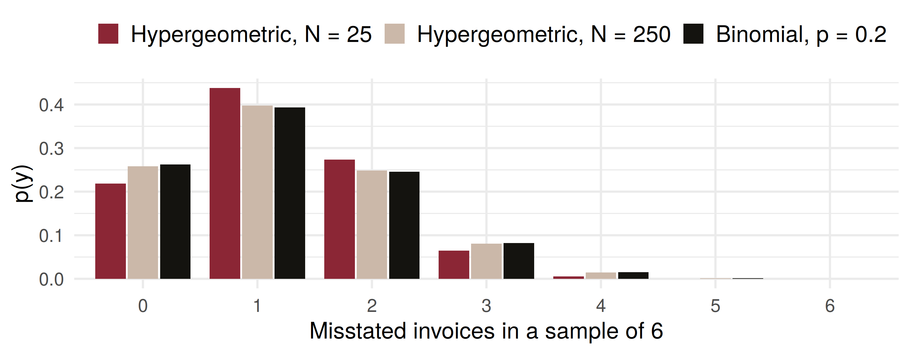

Code
window mean P_none P_over_30
1 10 min 2 0.1353 0.0000
2 30 min 6 0.0025 0.0000
3 1 hour 12 0.0000 0.0000
4 2 hours 24 0.0000 0.0958The Hypergeometric and Poisson Distributions; Midterm I Review
ADA University, School of Business
Information Communication Technologies Agency, Statistics Unit
2026-09-24
By the end of this lecture, you will be able to:
Recognise sampling without replacement from a finite pool, and model it with the hypergeometric distribution
Compute hypergeometric probabilities, mean and variance, and explain the factor \(\frac{N-n}{N-1}\)
Apply the Poisson distribution to counts of events in time, including a Poisson process over \(a\) units
Use the Poisson as the limit of the binomial for rare events
Choose among the five discrete models of Chapter 3 for Midterm I
Wackerly §3.7–3.8
Saturday ended on one sentence: the binomial fixes the trials; the geometric and negative binomial fix the successes and count the trials. All three rest on the same two assumptions — independent trials with a constant \(p\).
Today we drop the assumptions themselves, one at a time. Draw without replacement from a small pool and independence fails: that is the hypergeometric. Let \(n \to \infty\) while \(p \to 0\) and there is no \(n\) left to count: that is the Poisson.
An auditor receives a batch of 25 invoices from a Baku construction supplier. Unknown to her, 5 are misstated. She pulls 6 at random for testing.
The first draw is misstated with probability \(5/25 = 0.20\). If it was, the second is misstated with probability \(4/24 = 0.167\); if it was not, \(5/24 = 0.208\).
The trials are not independent and \(p\) is not constant, so \(Y\), the number of misstated invoices in the sample, is not binomial. It is a counting problem over subsets — Section 2.6 — and that is where the book derives the answer.
Definition 3.10
A random variable \(Y\) has a hypergeometric probability distribution if and only if \[p(y) = \frac{\binom{r}{y}\binom{N-r}{n-y}}{\binom{N}{n}},\] where \(y\) is an integer \(0, 1, 2, \ldots, n\), subject to \(y \le r\) and \(n - y \le N - r\).
Numerator: choose \(y\) of the \(r\) “red” elements and \(n-y\) of the \(N-r\) others (the \(mn\) rule). Denominator: all \(\binom{N}{n}\) equally likely samples. In R: dhyper(y, r, N - r, n).
The firm’s rule: escalate to a full audit if two or more of the 6 sampled invoices are misstated. With \(N = 25\), \(r = 5\), \(n = 6\):
\[p(0) = \frac{\binom{5}{0}\binom{20}{6}}{\binom{25}{6}} = \frac{38760}{177100} = 0.2189, \qquad p(1) = \frac{\binom{5}{1}\binom{20}{5}}{\binom{25}{6}} = \frac{77520}{177100} = 0.4377\]
\[P(Y \ge 2) = 1 - p(0) - p(1) = 1 - 0.2189 - 0.4377 = 0.3434\]
A batch with one invoice in five misstated still passes the test about two times in three. The complement did the work, exactly as in Chapter 2.
Theorem 3.10
If \(Y\) has a hypergeometric distribution, \[\mu = E(Y) = \frac{nr}{N} \qquad \sigma^2 = V(Y) = n\left(\frac{r}{N}\right)\left(\frac{N-r}{N}\right)\left(\frac{N-n}{N-1}\right)\]
With \(p = r/N\) this is \(\mu = np\) and \(\sigma^2 = npq\,\frac{N-n}{N-1}\): the binomial, times a finite-population correction.
Audit: \(\mu = 6(5)/25 = 1.2\) and \(\sigma^2 = 6(0.2)(0.8)(19/24) = 0.76\). The binomial would say \(0.96\) — sampling without replacement removes about a fifth of the variance.

Same \(r/N = 0.2\) throughout. At \(N = 250\) the sample is 2.4% of the pool and the hypergeometric is indistinguishable from the binomial; at \(N = 25\) it is 24% and the distribution is visibly tighter.
Split a day into \(n\) tiny subintervals, each holding at most one event with probability \(p\), independently. The count is binomial. Now let \(n \to \infty\) with \(\lambda = np\) fixed: \[\lim_{n\to\infty}\binom{n}{y}p^y(1-p)^{n-y} = \frac{\lambda^y}{y!}e^{-\lambda}\]
Definition 3.11
\(Y\) has a Poisson probability distribution if and only if \[p(y) = \frac{\lambda^y}{y!}e^{-\lambda}, \qquad y = 0, 1, 2, \ldots, \quad \lambda > 0.\]
The cargo-insurance desk of a Baku insurer receives on average \(\lambda = 3\) claims per day, and can fully process 4 in a day. Let \(Y\) be tomorrow’s claim count.
\[P(Y = 0) = e^{-3} = 0.0498 \quad P(Y = 1) = 3e^{-3} = 0.1494 \quad P(Y = 2) = 4.5e^{-3} = 0.2240\]
The desk falls behind when \(Y \ge 5\): \[P(Y \ge 5) = 1 - P(Y \le 4) = 1 - 0.8153 = 0.1847\]
Roughly one working day in five leaves a backlog. In R: 1 - ppois(4, 3), or Table 3 of Appendix 3.
Theorem 3.11
If \(Y\) has a Poisson distribution with parameter \(\lambda\), then \(\mu = E(Y) = \lambda\) and \(\sigma^2 = V(Y) = \lambda\).
Proof idea. In \(\sum_{y} y\,\lambda^y e^{-\lambda}/y!\) the \(y = 0\) term vanishes; cancel \(y\) against \(y!\), factor out \(\lambda\), and put \(z = y - 1\). What remains is a Poisson sum, which equals 1. The variance is Exercise 3.138.
A practical test: if claim counts show a sample variance far above their mean, the Poisson model — not just its \(\lambda\) — is in doubt.
If events occur as a Poisson process at \(\lambda\) per unit, the count in \(a\) units is Poisson with mean \(a\lambda\). An ATM in Nizami Street averages 12 withdrawals per hour.
window mean P_none P_over_30
1 10 min 2 0.1353 0.0000
2 30 min 6 0.0025 0.0000
3 1 hour 12 0.0000 0.0000
4 2 hours 24 0.0000 0.0958No withdrawal in 10 minutes: \(e^{-2} = 0.1353\). A cassette good for 30 withdrawals runs out within 2 hours with probability \(0.0958\).
A bank’s trading desk has a loss event (a failed settlement, a fat-finger trade) on any of 250 trading days with probability 0.008, independently. Binomial, or Poisson with \(\lambda = np = 2\)?
y binomial poisson
1 0 0.1343 0.1353
2 1 0.2707 0.2707
3 2 0.2718 0.2707
4 3 0.1812 0.1804
5 4 0.0902 0.0902
6 5 0.0358 0.0361Agreement to the third decimal: \(P(Y \ge 4)\) is \(0.1421\) exact and \(0.1429\) Poisson. The book’s rule of thumb: large \(n\), small \(p\), \(\lambda = np\) below about 7.
lam = 2
binomPmf = (n, p) => {
const out = [Math.pow(1 - p, n)];
for (let k = 0; k < 10; k++) out.push(k + 1 > n ? 0 : out[k] * (n - k) / (k + 1) * p / (1 - p));
return out;
}
poisPmf = Array.from({length: 11}, (_, k) => {
let f = 1; for (let i = 2; i <= k; i++) f *= i;
return Math.exp(-lam) * Math.pow(lam, k) / f;
})
bin = binomPmf(n_sub, lam / n_sub).map((p, k) => ({y: k, p}))
pois = poisPmf.map((p, k) => ({y: k, p}))
gap = d3.max(bin, (d, k) => Math.abs(d.p - pois[k].p))
md`With **n = ${n_sub}** and **p = ${(lam / n_sub).toFixed(4)}**, the largest gap between binomial bars and Poisson dots is **${gap.toFixed(4)}**.`Plot.plot({
width: 1150,
height: 300,
marginLeft: 78,
marginBottom: 58,
style: {fontSize: "18px"},
x: {label: "y", domain: d3.range(0, 11), padding: 0.25},
y: {label: "p(y)", domain: [0, 0.45], tickFormat: ".2f"},
marks: [
Plot.barY(bin, {x: "y", y: "p", fill: "#cbb8a9"}),
Plot.dot(pois, {x: "y", y: "p", r: 8, fill: "#8b2635"}),
Plot.ruleY([0])
]
})A bank’s risk desk has recorded operational-loss events as a Poisson process at 2 per month for years. Last quarter (3 months) there were 11.
Four minutes, in pairs:
What is the distribution of \(Y\), the number of events in a quarter?
Where does 11 fall relative to \(\mu \pm 2\sigma\)?
Is 11 alarming enough to report to the risk committee?
A Poisson process over \(a = 3\) months: \(Y\) is Poisson with \(\lambda^\star = 3 \times 2 = 6\).
Theorem 3.11: \(\mu = 6\), \(\sigma = \sqrt{6} = 2.45\), so \(\mu + 2\sigma = 6 + 2(2.45) = 10.90\). The observed 11 lies just outside.
1 - ppois(10, 6).Not impossible, but a one-in-25 quarter under the old rate — worth an investigation into whether \(\lambda\) has risen, which is the reasoning of Example 3.22.
The Energy Ministry awards 6 solar licences by lottery among 16 bidders, of whom 4 are joint ventures. What is the probability that no joint venture wins?
Withdrawals at an ATM follow a Poisson process at 12 per hour. What is the probability of no withdrawal in a 5-minute window?
| Model | \(Y\) is… | \(E(Y)\) | \(V(Y)\) |
|---|---|---|---|
| Binomial §3.4 | successes in \(n\) independent trials | \(np\) | \(npq\) |
| Geometric §3.5 | the trial of the first success | \(1/p\) | \(q/p^2\) |
| Negative binomial §3.6 | the trial of the \(r\)-th success | \(r/p\) | \(rq/p^2\) |
| Hypergeometric §3.7 | “red” items in \(n\) drawn without replacement | \(nr/N\) | \(npq\frac{N-n}{N-1}\) |
| Poisson §3.8 | events in a fixed interval | \(\lambda\) | \(\lambda\) |
Ask in order: is \(n\) fixed? Independent trials, binomial; a finite pool, hypergeometric. Is the trial count the variable? Geometric or negative binomial. Only a rate? Poisson.
Of a bank’s 12 branches, 3 failed an internal compliance check. The Central Bank inspects 4 branches chosen at random. Find the probability that it finds at least one failing branch, and the mean and variance of the number it finds.
Without replacement from \(N = 12\) with \(r = 3\), \(n = 4\): \[P(Y \ge 1) = 1 - \frac{\binom{3}{0}\binom{9}{4}}{\binom{12}{4}} = 1 - \frac{126}{495} = 0.7455\]
\(\mu = 4(3)/12 = 1\) and \(\sigma^2 = 4(0.25)(0.75)(8/11) = 0.5455\). Treating it as binomial would give \(1 - 0.75^4 = 0.6836\) — wrong, and by 6 points.
Large claims (above 50,000 AZN) reach a reinsurer as a Poisson process at 0.5 per week. Call a 4-week month quiet if it has at most one large claim. Months are independent. Find the probability that at least 2 of the next 6 months are quiet.
Step 1 (§3.8). A month has \(\lambda = 4(0.5) = 2\): \(w = P(Y \le 1) = e^{-2} + 2e^{-2} = 3e^{-2} = 0.4060\).
Step 2 (§3.4). Quiet months \(X\) are binomial with \(n = 6\), \(p = w = 0.4060\): \[P(X \ge 2) = 1 - (0.5940)^6 - 6(0.4060)(0.5940)^5 = 1 - 0.0439 - 0.1801 = 0.7759\]
Claims at a desk are Poisson with \(\lambda = 4\) per day. Daily handling cost is \(C = 500 + 800Y\) AZN. What is the standard deviation of \(C\)?
| Statement | |
|---|---|
| Definition 3.10 | \(p(y) = \binom{r}{y}\binom{N-r}{n-y}\big/\binom{N}{n}\) |
| Theorem 3.10 | \(\mu = \frac{nr}{N}\), \(\ \sigma^2 = n\frac{r}{N}\frac{N-r}{N}\frac{N-n}{N-1}\) |
| Definition 3.11 | \(p(y) = \frac{\lambda^y}{y!}e^{-\lambda}\), \(\ y = 0, 1, 2, \ldots\) |
| Theorem 3.11 | \(\mu = \sigma^2 = \lambda\) |
| Poisson process | count in \(a\) units is Poisson with mean \(a\lambda\) |
| Poisson limit | \(\binom{n}{y}p^y q^{n-y} \approx \frac{(np)^y}{y!}e^{-np}\), large \(n\), small \(p\) |
Drawing without replacement from a small pool breaks independence: the count is hypergeometric
Its mean is the binomial’s \(np\); its variance is \(npq\) shrunk by \(\frac{N-n}{N-1}\), which matters when \(n/N\) is not small
Counts of rare events in an interval are Poisson, and the single parameter \(\lambda\) is both the mean and the variance
Over \(a\) units of a Poisson process the mean is \(a\lambda\); for large \(n\) and small \(p\) the binomial is close to Poisson(\(np\))
For Midterm I, name the model before computing: fixed \(n\)? finite pool? trials to a success? only a rate?
Wackerly, 7th edition
Week 7, Problem Set 1 is open now and closes Sunday 1 November at 23:59 on WeBWorK, covering §§3.7–3.8. It is the only set this week.
Midterm Examination I is on Saturday 24 October: Chapters 1–3, §§3.1–3.8.
Next class: 28 October, after the midterm — moments and moment-generating functions (Wackerly §3.9).
Dr. Samir Orujov
📧 sorujov@ada.edu.az
🏢 Building D, Room D325
🕓 Office hours: Wednesday, 16:00 – 18:00
Slides and readings: sorujov.net/teaching
In the audit, how large must the batch \(N\) be before the binomial answer is within 0.005 of the hypergeometric one?
Why can a Poisson count exceed any bound, when a binomial count never exceeds \(n\)?
Two independent ATMs average 12 and 8 withdrawals an hour. What would you guess the distribution of their total is — and how would you check it?

Mathematical Statistics I - Hypergeometric and Poisson; Midterm I Review